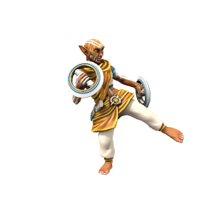

Religion
The state religion of Kashar, Sikari, is deeply rooted in the local history of the region. Followers worship local patron deities and rever the Eternal Flame, a magical fire housed in Durga-Agun atop a vast tower, burning in a vast metal dish full of oil. The flame has been burning since the founding of Kashar by the first Sultan and represents the strength and stability of the Kash dynasty. The fire is near impossible to extinguish, once lit any fuel will burn to ashes regardless of any attempt to put the fire out.
Ranks
Brahman

The leader of the faith, advises the Sultan on spiritual matters and administers the Sikari faith.
Herbad

Herbadi are keepers of the flame, who generally perform the day to day maintenance such as adding oil and tower maintenance.
Mobad
Mobadi are trainee keepers of the flame, learning the ancient rituals from Herbadi.
🡐 Home